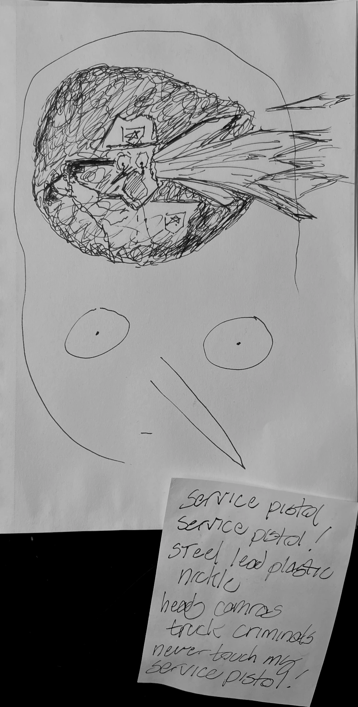

Hayden Shuker
heartwarming: Pennsylvania factory still makes content the old fashioned way
|==== ENTER ====|heartwarming: Pennsylvania factory still makes content the old fashioned way
|==== ENTER ====|Sealed sap scaring as age usurps,
the road grew thin by commerce heal.
In the plastered sagging sandstone earthworks,
beaten water turns the wheel.
Listen for its creaking still,
never seizing, the long dead mill.
After a session of anti-meditation, I developed a thought pattern that seemed constantly ahead of me, dragging me though a cycle tricking my physical behavior into a repetitive dance. The cycle would give me insight, I would 'see above everything'. This would morph into a despair at my vision's emptiness, then I would hit the funny stage where I would re-realize the cycle's existence. This would then metabolize back into the serious positive stage, though with no usable anchor, progression or escape. I visited the astral plane, talked with my mentors and woke back up.
I want to talk about the consumer. We have the technology for liberal individualist utopia. Individualism says "your mind is your mind, and even if there may be other minds so be it. You need to use your facilities to suck the best juice out of reality before you die." And you try to stack up metals, or memories of sex, or kids, or whatever. This is in contrast to the collective mind, the "there's not really a justification for your mind to be separate from other aspects of reality despite your camera being strapped to a specific creature, and you just barley have the capability to access the emotion of this whole." My consumers are the so-called 'idealized americans' who've been scattered entropically over the country side, trim their sensory experience to their own cozy preference, and avoid contact with other minds that aren't tailored to be reflexive. Liberalism claims to scatter power to the selfish sensation seeking individuals who will use it to build liberal utopia: the ultimate kingdom of men:
Contactless delivery, work from home, cut them off, self care, introvert, curated feed, delegate your chores, be your own boss, online friends from online communities, non-religious spiritual (I have my own belief system), political independents, self sufficiency in the sense of owning a ride-on lawn tractor mastering ritualized neo-yeomenery.
Basement-dwell, incel, sigma male,
elevate then: web-business clientele.
The company town is now the company house,
digital monad laptop-mouse dragging, contract pseudo-entrepreneurs of the blue grass pastoral studded planes.
Cut their grains, get your gains,
optimized your brain with the unsmelling unquestioning ai companion.
Lobotomize me, you can't understand my autism, adhd, bpd,
anxiety-depression money-getting "leave me alone a second",
choice feminism prevails because choice is more important them feminism.
What if every single room had independent temperature control and it was all wired though an app?
Mass-applied pesticide waters my California pistachios
dead bodies can only foreshadow real suicide because "when I die, its the end of the world."
American culture is deeply rotten because it wants to individualize everything. The dream can manifest if the internal countervailing force within liberalism of economies of scale can be defeated. This is the grok-slop endgame, everyone watches their own ai movies that target the individual's psychosis, most primed neural pathways and paraphilia. The social media internet as it exists now is the half-way manual version of this where one chooses their own content match their mind. The people on the other end don't matter they are chosen and act predictably to placate the conversation with the self as replacement for the biological social drive.
I've been "prompt engineering" my model to be a little more realistic. I like to leave my laptop in a hot car to punish it.
The goal of BIG TECH is the convergence of signs and police. Like those speed limit machines that say how fast you're going and flash red and blue to scare you.
